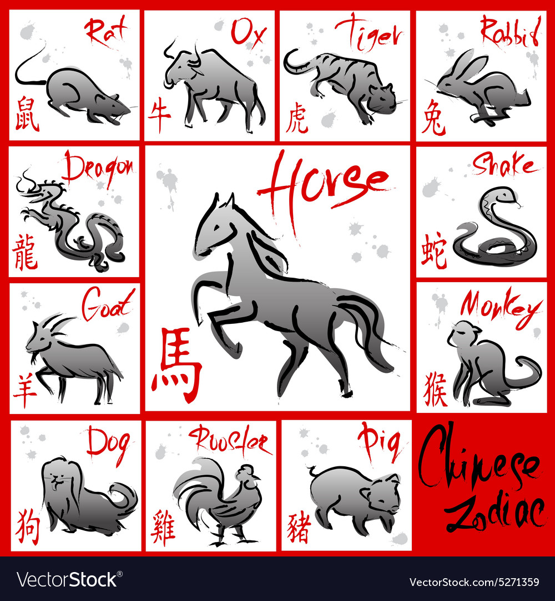

All Animal Summary
The Chinese zodiac, or shengxiao, refers to the circle of 12 animals that measure the cycles of time. Signs or animals are determined by the lunar year in which you were born.
Legend has it that a god beckoned all animals to bid him farewell before his departure from Earth. Only 12 of them, namely the rat, ox, tiger, rabbit, dragon, snake, horse, goat, monkey, rooster, dog and pig arrived, with each given a place of honor in a year based on the order of arrival.
